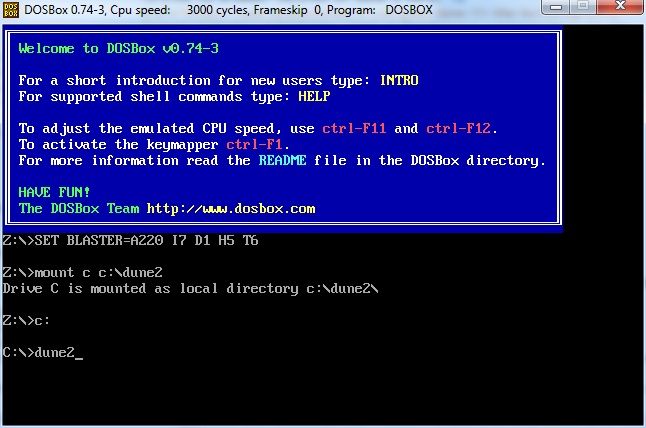
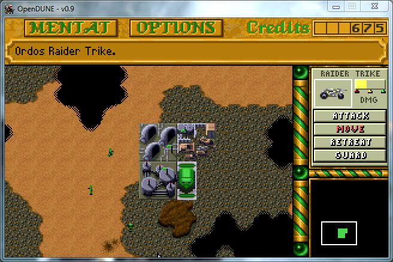
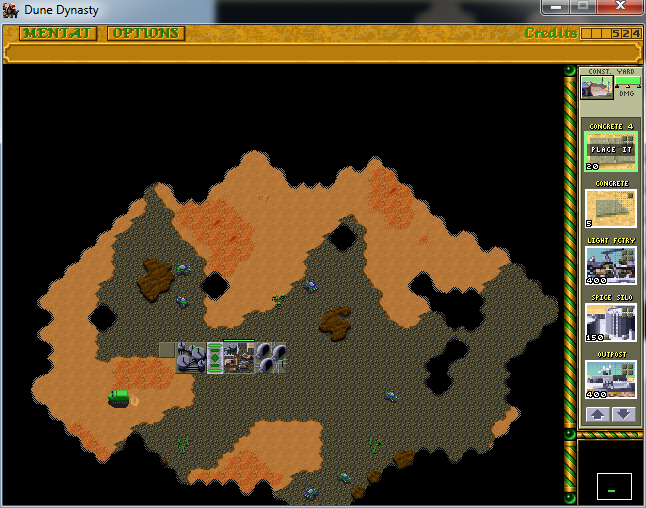

A highly influential RTS game released in 1992. Set in the world of Frank Herbert's 1965 science fiction novel Dune. One the planet Arrakis, better known as 'Dune', the player takes command of one of three Noble Houses and lead them to defeat the opposing houses and the Padishah Emperor to become the ruler of Dune.
Playing Dune II
Released in 1992, Dune II is likely incompatible with newer operating systems and unable to run normally on newer versions of Windows. There are several ways to get Dune II running on newer machines including community made mods/custom campaigns or simply a pure emulation of the original game.
The original game can be emulated and played in a web browser without the need to download/install any files or navigate a command line interface. The playing experience in the browser can be poor and the DOSBox emulator runs the game a lot more smoothly for a bit more effort.
DOSBox is an emulator program for the DOS operating system. It is capable of running the original version of Dune 2. Using DOSBox requires some use of a command line interface before you can actually start running the game, but it gives you the traditional Dune 2 experience.
Download the Dune 2 game files: Dune II - The Building of a Dynasty.zip
Unzip the files with 'Extract Here' to unzip the game files to a folder named DUNE2
Place the DUNE2 folder in the C drive, Local Disk (C:)
Download and Install the DOSBox with DOSBox0.74-3-win32-installer.exe
Run the DOSBox, then enter in the command line
mount c c:\dune2
c:
dune2
Game should now be running, Press ctrl+f12 until the cycles at the top of the window are around 20,000 to run smoothly

OpenDUNE
OpenDUNE is an open source re-creation of the popular game "Dune II",
originally made by Westwood Studios, and released by Virgin Entertainment.
It attempts to re-create the original game and apply modern technology to it
to allow it to be run natively on most operating systems.
OpenDUNE is mostly identical to the original Dune II but implements some bug fixes and can be run on modern operating systems without an emulator.
Download the Dune 2 game files: Dune II - The Building of a Dynasty.zip
Unzip the files with 'Extract Here' to unzip the game files to a folder named DUNE2
Download and extract the OpenDUNE zip: opendune-0.9-windows-win64.zip
Copy everything in the DUNE2 folder and place it in the opendune/data folder
Run opendune.exe

Dune Dynasty
Dune Dynasty is a modified version of Dune 2 that runs on the OpenDUNE engine. It adds modern enhancements to the game to make it easier to play but is otherwise the same as the original game. Dune Dynasty features:
High-res graphics, including zooming
Multiple Unit Selection, with control groups
New build queue interface
Rally points
Multiple sound channels
Dynasty also has built in support for custom campaigns, and a skirmish mode. Custom campaigns are downloaded and installed seperately
Download the Dune 2 game files: Dune II - The Building of a Dynasty.zip
Unzip the files with 'Extract Here' to unzip the game files to a folder named DUNE2
Download the Dune Dynasty .zip file dunedynasty-win32-1.5.7.zip and use 'extract here' to extract the dunedynasty-1.5.7 folder
Copy everything in the DUNE2 folder and place it in the dunedynasty-1.5.7/data folder
Run dunedynasty.exe

Dune Legacy
Dune Legacy is a modified verison of Dune 2. In addition to enhancements making the game easier to play (like zoom levels and multiple unit selection), Dune Legacy implements gameplay balance changes. Such as buildings and Turrets being weaker and manually controlled Ornithopters. Dune Legacy features:
Modern display resolutions
Modern RTS controls like selecting multiple units and right-click commands
Original campaign with Harkonnen, Atreides and Ordos
Super Dune Campaign with Fremen Sardaukar and Mercenary
Multiplayer support
Map Editor
Dune Legacy comes with custom campaigns already installed.
A Dune II clone that aims to be as close to the original as possible. It supports multiplayer and skirmish. No installation required just download and unzip D2TM-DEMO4.ZIP and run the executable.
A Dune II clone with no campaigns, only skrimish and multiplayer. The gameplay balance is different from the original with the three playable Houses being more distinct from one another and adding more content like hiring Mercenaries with Trading Posts.
No installation required, just download D2TGP_1_1_25_M.zip and extract to \D2TGP_1_1_25_M. Then simply run the executable.